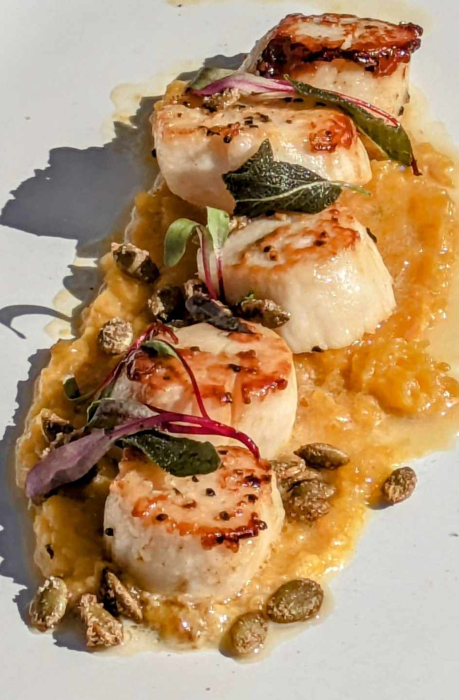
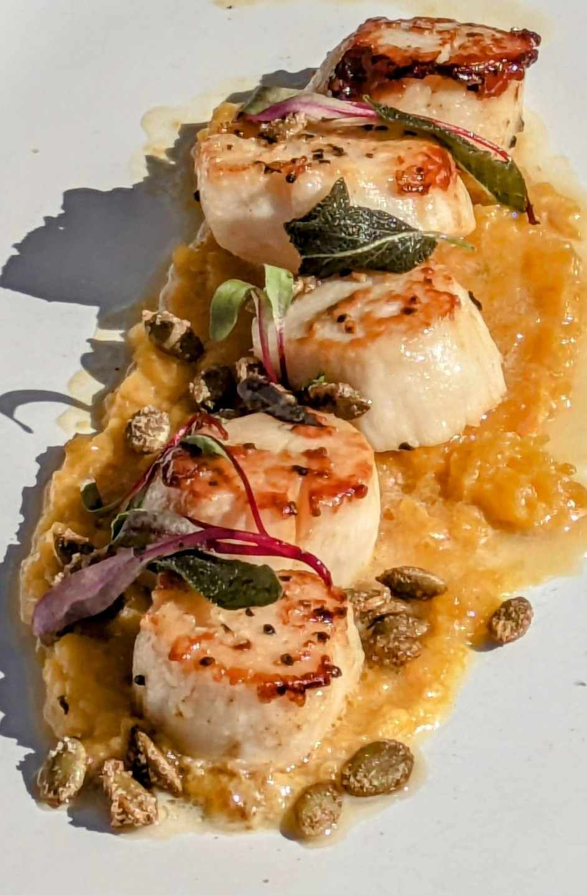

About Chef David Breeden
I come from the mountains of Western North Carolina, where the land is rich, the seasons shape the table, and tradition runs deep. My grandfather and great-grandfather were a big part of my life, and the time I spent with them shaped who I am—especially as a chef.
They taught me what real hard work looks like. I spent my childhood helping in the garden, splitting wood, gathering eggs, preserving summer’s bounty, and roaming the woods digging ramps. My great-grandfather was a man of many trades—he was a bear hunter, a moonshiner, a WWII veteran, a mica miner, and he even grew tobacco. He embodied resilience and versatility, and I was always fascinated by his stories and the life he lived. He and my grandfather showed me what it meant to be tough, resourceful, and proud of your work.
Their influence shaped my work ethic and my passion for food. With over 13 years in the culinary world—from local kitchens to high-end dining and private chef experiences—I bring those Appalachian values into everything I do. At Mountain Roots Catering, I specialize in refined Appalachian cuisine—honoring the flavors of my heritage while adding my own creative touch.
Every dish I create carries a piece of where I’m from. It’s more than just cooking—it’s storytelling, memory, and a tribute to the men who taught me the meaning of hard work.

 
